Letters
Letters are communications generated to borrowers that are stored in the database and can be reviewed, adjusted or even discarded before transmission.
Introduction
The Letters module creates borrower communications that can include:
- details about the borrower
- details of all issues currently out to the borrower
- details of all current overdues for the borrower
- details of outstanding fees for the borrower.
Library administrators can customise the existing templates (there are 9 templates included with Athenaeum) or create new templates.
Components
The Letters module consists of
- Letters - the letters generated and printed or emailed to the borrower
- Templates - the structure of each letter
- Tokens - the bits of information that are evaluated in real time and substituted into the templates to build the Letters
You only need to know about tokens when you want to adjust or create templates.
HTML or plain text?
Letters have two parts:-
- a plain text component
- an HTML component
Plain text is always used in every letter.
The HTML component is only used when sending emails and is discarded for printed letters.
Depending upon the email client that borrowers are using, they are most likely to see the HTML version of your letter, but not always. So when sending email letters, always ensure that both versions of the letter are similar.
Creating Letters from Borrowers
Letters can be generated from a found set of borrowers or a found set of issue records.
The procedure to create Letters when looking at a selection of borrowers is to:
- click the "Letters" menu
- choose a letter template
- check and possibly edit the generated Letters
- output it to printer, pdf or e-mail
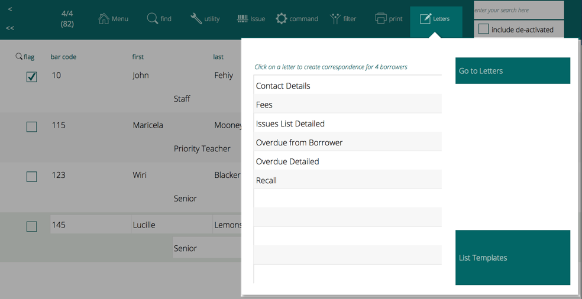
Find your Borrowers
Find the borrowers you wish to communicate in one of the standard ways - for example:
- ad hoc find or
- find a class/room or group or
- find a set of issues and then "list borrowers" for those issues
Choose a template
While viewing the borrower found set in list view, click the "Letters" button:
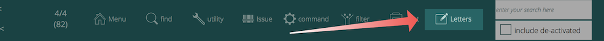
Click on the name of the template you wish to use. The names should be reasonably self explanatory.
Confirm that you wish to create letters for the number of borrowers.
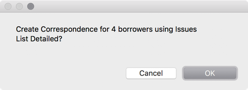
The letters are generated immediately and a list of Letters is displayed. You can scroll through this list, reviewing the various letters.
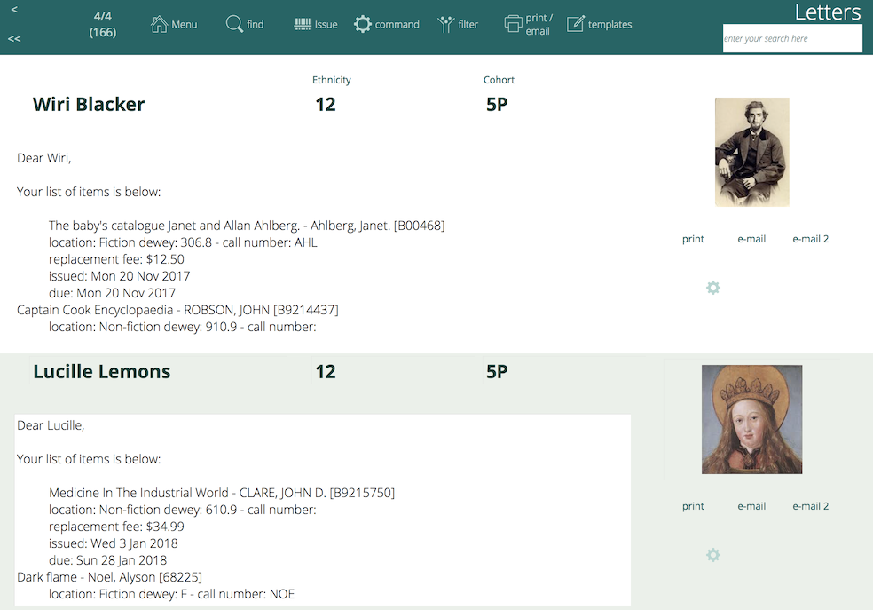
If you make a mistake, then immediately go to the Command menu and choose "Delete X letters" to remove the Letters you just created.
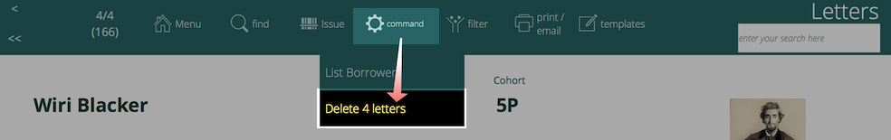 
Check and edit
Each individual Letter is presented in a tab showing plain text.
However, if the template used has an html version, such as the overdue letters created from circulation, then the html version of the letter is also stored. You can switch between the plain and html tabs to see each.
Do not apply any text formatting such as bold, italic of font styles, as this will be discarded.
Output your Letters
Individually
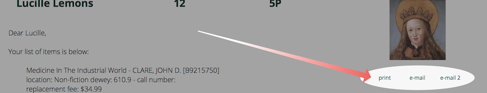
You can print individual letters by clicking the print button.  E-mail individual letters by clicking e-mail buttons 1 or 2.  If no e-mail address is associated with the borrower, the email buttons do not show.  Clicking the gear widget below the print/email options shows a pop-over window with the date printed and/or emailed.
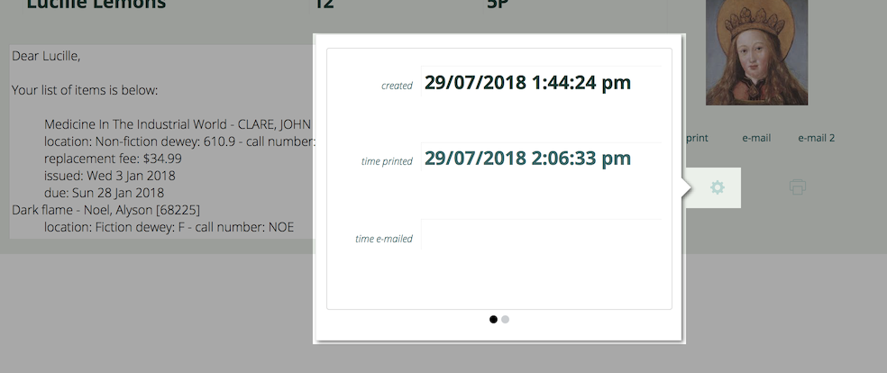
In Bulk
Of course, you may output bulk Letters in one step.
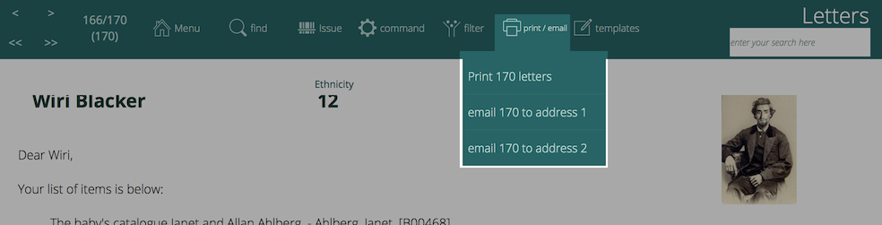
At the top of the list, you may use the send e-mails and print Letters buttons to send all found set of letters to e-mail addresses 1, 2 or print.
Creating Letters from Issues (circulation)
This is slightly different in that you don't choose a template, but rather choose an action on the found set of issue records, either from the print or email menus.
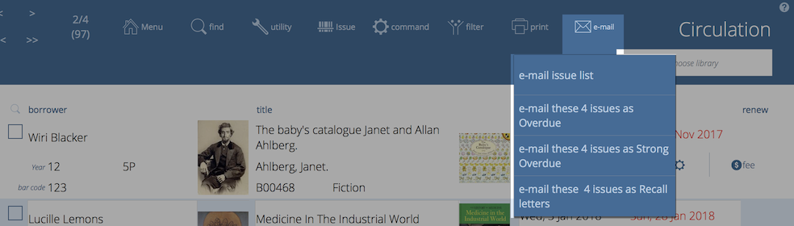
One difference between generating letters from Circulation compared to doing so from Borrowers is that Letters from Circulation can be processed (e.g. printed or sent) immediately, whereas letters from Borrowers will be saved to the database and you must then choose to print or email as a separate action.
Another is that the Circulation letters have "html" options which can include book cover image information in emails.
Creating and Customising templates
Athenaeum Pro comes with 9 templates that cover common Letters scenarios. You may - and are encouraged to - edit existing templates to create Letters customised for your needs and you can duplicate and customise existing templates or create new templates from scratch.
Letters is generated from Templates, which combine plain text and "tokens".  Click the List Templates button at the right side of the Borrower Utility screen to see a scrollable list of the current templates.
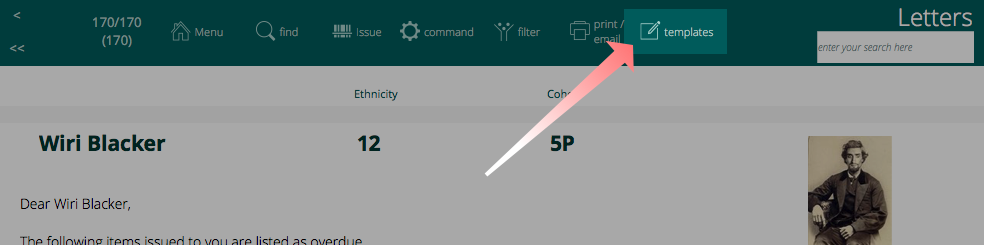
Template Parts
Templates consist of the following components:
- Context,
- Name,
- Include flag
- The template content
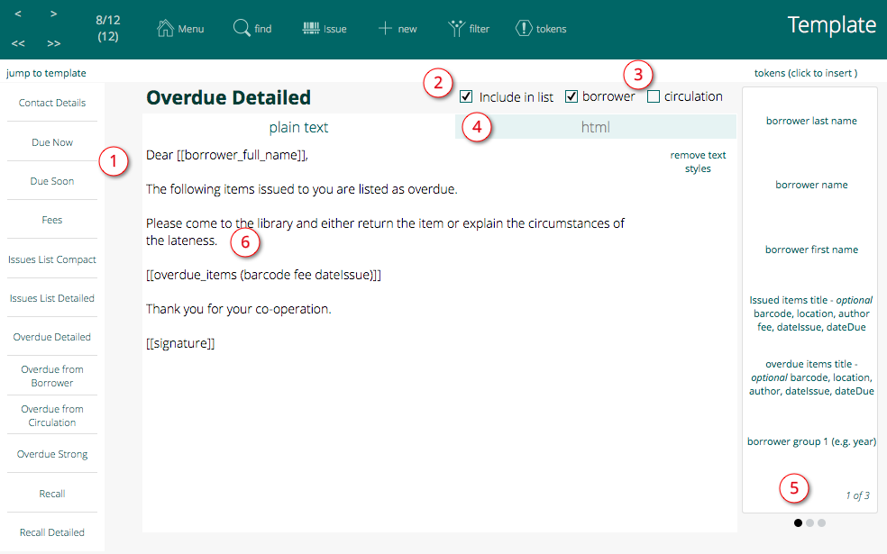
- 1
- navigation list of templates - click one to jump to that template
- 2
- include in list flag (uncheck to hide from the letters list on borrower screen)
- 3
- context: defines which modules (borrower or circulation) that the template is visible to
- 4
- plain text and html tabs - only visible when a template has both components
- 5
- token list - sliding panels with clickable tokens. Click a token to insert it where your cursor currently is located in the letter. Tokens are substituted at the time the letter is generated.
- 6
- the content of the template. Enter text here as you would in a plain text editor. Do not apply formatting such as font faces, bold, italics, etc as formatting will be ignored.
Tokens
The template contains the text and embedded tokens that are substituted at the time the letter is generated.
Tokens are the symbols that are replaced at the time the letter is generation. To use these, simply type your text into the template, and when you wish to insert a token, click, using the mouse, the token you want to insert and its symbol will be inserted.
For example, if you would like letters to William Smith read:
Dear William,
Please ...etc...
You would type into a new template:
Dear
then you would click on the borrower first name token on the right.
Athenaeum inserts the token for Borrower first name (which happens to be
[[borrower_given_name]]
Then continue to type the rest of the template.
There are three types of tokens.
Simple Tokens
Simple tokens which substitute a single value into Letters (e.g. borrower last name which inserts the current borrower's last name). These should be inserted into the middle of the text just like any other word.
Complex tokens
Complex tokens, such as "outstanding fees" which will substitute one or more lines of text, such as a list of fees outstanding with a date, reason, etc.
Customisable Tokens
These are complex tokens (possibly multiple line) where you can specify elements to be included or not.
[[issued_items (barcode location author fee dateIssue dateDue)]]
 When inserting such a token, you may choose to delete individual words from between the parentheses, and the corresponding information will be omitted from the letters.
For example, this template:
Dear [[borrower_full_name]],
The following items are overdue. Please come to the library and either return the item or explain the circumstances of the lateness.
[[overdue_items (barcode location author fee dateIssue dateDue)]]
Thank you for your co-operation.
Claire Files
Ararimu Library
 might produce this Letters:
Dear Darryl Krell,
The following items are overdue. Please come to the library and either return the item or explain the circumstances of the lateness.
Matting, mounting and framing art Max Hyder ; illustrated by Paul LaPlaca. - Hyder, Max. [07573]
replace fee: $54.95 issued: 10/02/2013 due: 31/03/2013
Ptolemy's gate Jonathan Stroud. - Stroud, Jonathan. [55409]
replace fee: $29.95 issued: 23/04/2013 due: 26/04/2013
Biker - Masters, Anthony [60136]
issued: 29/04/2013 due: 23/07/2014
Thank you for your co-operation.
Claire Files
Ararimu Library
 You can see that two entries were inserted into the letter and the replacement fee, issue & due dates, bar code, title are all included.
However, editing the template like so (removing the due date, author and location): 
Dear [[borrower_full_name]],
The following items are overdue. Please come to the library and either return the item or explain the circumstances of the lateness.
[[overdue_items (barcode fee dateIssue)]]
Thank you for your co-operation.
Claire Files
Ararimu Library
Will result in a simplified output:
Dear Darryl Krell,
The following items are overdue. Please come to the library and either return the item or explain the circumstances of the lateness.
Matting, mounting and framing art Max Hyder ; illustrated by Paul LaPlaca. [07573]
replace fee: $54.95 issued: 10/02/2013
Ptolemy's gate Jonathan Stroud. [55409]
replace fee: $29.95 issued: 23/04/2013
Biker [60136]
issued: 29/04/2013
Thank you for your co-operation.
Claire Files
Ararimu Library
Token descriptions
| insert button name | token | description |
|---|---|---|
| borrower address | borrower_contact_address | the multi-line contact address for the current borrower |
| borrower contact | borrower_contact_name | the name of the contact associated with the borrower consisting the title + contact first + contact last names |
| borrower email | borrower_email1 | the first email address associated with the borrower |
| borrower email 2 | borrower_email2 | email address 2 for the borrower |
| borrower $$family name | $$borrower_family_name | Used specifically in Room Overdue list. When building this list, Athenaeum notes the family name of the borrower associated with the room (actually "group 2") of the current issue. |
| borrower last name | borrower_family_name | last or family name of the current borrower |
| borrower $$full name | $$borrower_full_name | Used specifically in Room Overdue list. When building this list, Athenaeum notes the full name of the borrower associated with the room (actually "group 2") of the current issue. |
| borrower name | borrower_full_name | full name of the borrower |
| borrower $$given name | $$borrower_given_name | Used specifically in Room Overdue list. When building this list, Athenaeum notes the given (first) name of the borrower associated with the room (actually "group 2") of the current issue. |
| borrower first name | borrower_given_name | first or given name of the current borrower |
| borrower group 1 (e.g. year) | borrower_group1 | group 1 of the current borrower–e.g. Room–this is a generic name and is customised for each installation |
| borrower group 2 (e.g room) | borrower_group2 | group 2 of the current borrower–e.g. Year–this is a generic name and is customised for each installation |
| current date | currentDate | the date the report is generated |
| date reserved | date_reserve | the date that an item is reserved, used only by reserve_notifcation template. |
| outstanding fees | fees | list of fees for the current borrower |
| group 1 descriptor (e.g. "year", etc.) | group1_descriptor | the label you have assigned for group 1 (e.g. year) |
| group 2 descriptor (e.g. "room", "vertical form", etc.) | group2_descriptor | the label you have assigned for group 2 (e.g. room or vertical form) |
| group 2 family name (e.g. room contact last name) | group2_family_name | the last name for the borrower assigned to the group2 for the current issue record (similar to $$borrower_family_name above, but is created in a different context, internal differences require this) |
| group 2 given name (e.g. room contact first name) | group2_given_name | the first name for the borrower assigned to the group1 for the current issue record (similar to $$borrower_given_name above, but is created in a different context, internal differences require this) |
| Issued items title - optional barcode, location, author fee, dateIssue, dateDue | issued_items (barcode location author callnumber dewey fee dateIssue dateDue) | details for the issue items - descriptors inside the parentheses are optional inclusions for each line |
| issues list in memory | issues_variable | used by letters to rooms |
| item bar code of current issue | item_bar_code | token replaced by the bar code of the current item |
| list of issues | list_of_issues | a token representing the list of issues for the current borrower as plain text |
| list of issues as html table | list_of_issues_html | a token representing the list of issues for the current borrower as html text |
| logon details | logon_details | sends the web logon and password for the current borrower |
| lookup borrower family name | lookup_borrower_family | maintained for compatibility |
| lookup borrower first name | lookup_borrower_first | maintained for compatibility |
| lookup borrower group2 | lookup_borrower_group2 | maintained for compatibility |
| overdue items title - optional barcode, location, author, dateIssue, dateDue | overdue_items (barcode location author callnumber dewey fee dateIssue dateDue) | details for the issued items as overdues - descriptors inside the parentheses are optional inclusions for each line |
| signature | signature | the signature stored in admin preferences |
| signature html | signature_html | the signature stored in admin preferences, but retrieved as html |
| title of current issue | title | title of current issue, as you might expect! |
| author of current issue | title_author | Used in Reserve notification and calculates to the Author field from the Title table (does not use field labelled "other authors/contributors") |